Day 6, Sunday, Oct 02 2016
- update: Wednesday, 02. November 2016 04:06PM
My Masterpiece
- 周天没有什么特殊活动，去了当地一家华人超市，买到些的中国独有的调味品，以及大米、速冻水饺等物资。
- 来亚洲超市的目的主要就是满足口腹之欲，既然说到吃的，就这个在这个页面把自己历来的作品罗列一下，总结经验，也供以后参考借鉴，看看是否有些进步。
Snapshot
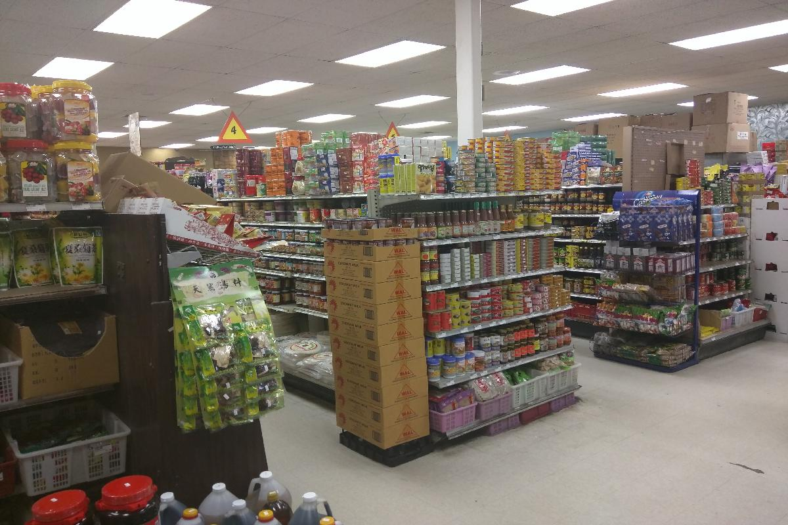
- 这家亚洲超市的内景。
- 进入超市第一感觉如同走到国内一个私营的小超市，空气中弥漫着咖喱、大蒜等各种辛辣的混合气味。顾客主要以黑人和亚裔人为主，也常常有些白人来光顾。货品也和国内的小超市差不多，基本上想买的都能买到，品牌主要以味全和李锦记为主，所以说方便面之类的，来美国还是不用带的太多了。
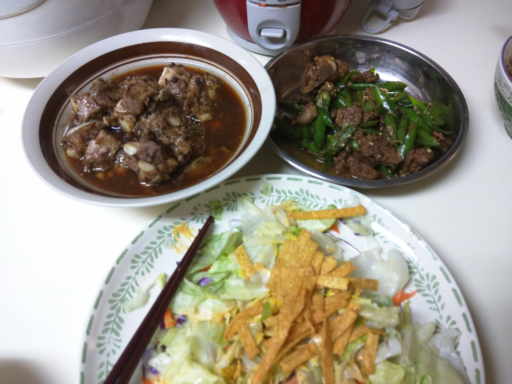
- 2016年10月2日制作，豆豉蒸排骨，辣椒炒牛肉，蔬菜沙拉。
- 从亚洲超市买的李锦记的豆豉酱，腌制排骨20分钟，上锅蒸15分钟即可。
- 稍微有点咸，以后在做只需用豆豉酱腌制即可，无需再加香油酱油等调味品。
- 辣椒炒牛肉，室友的绝活。炒肉的时候用了些他从家里带的火锅底料，一点点用油一爆就十分辣眼睛，不过味道的确不错
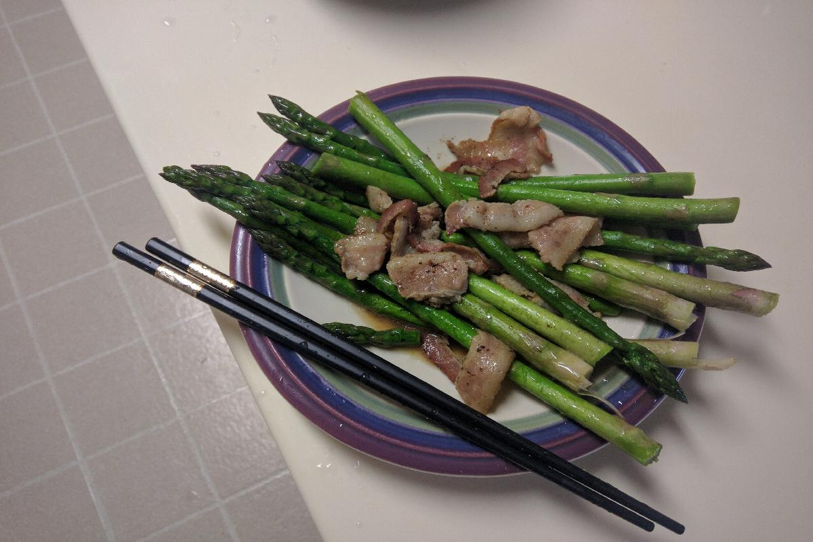
- 2016年10月4日制作，培根炒芦笋。
- 发现培根是傻瓜式炒菜的黄金元素，因为是腌制的五花肉，可以少放油盐，省了很多事。芦笋是第二次做了，入锅后稍微炒炒即可，很容易变老。
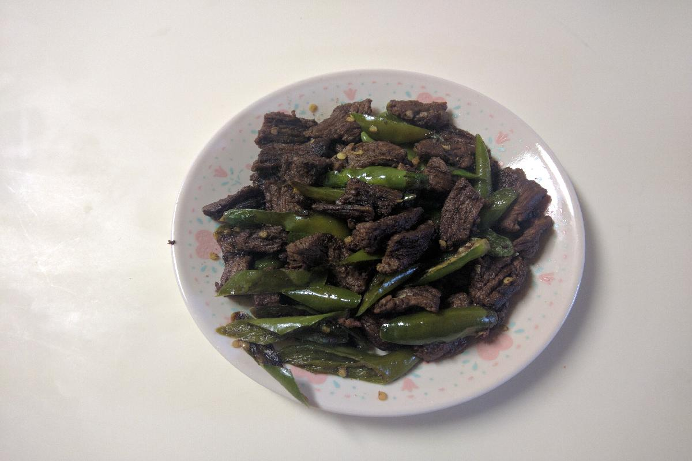
- 辣椒炒牛肉片。依然是室友的绝活，的确肉很入味，很好吃，缺点就是油烟太大，辣眼睛。大晚上写这些，肚子一直在严正抗议。==！
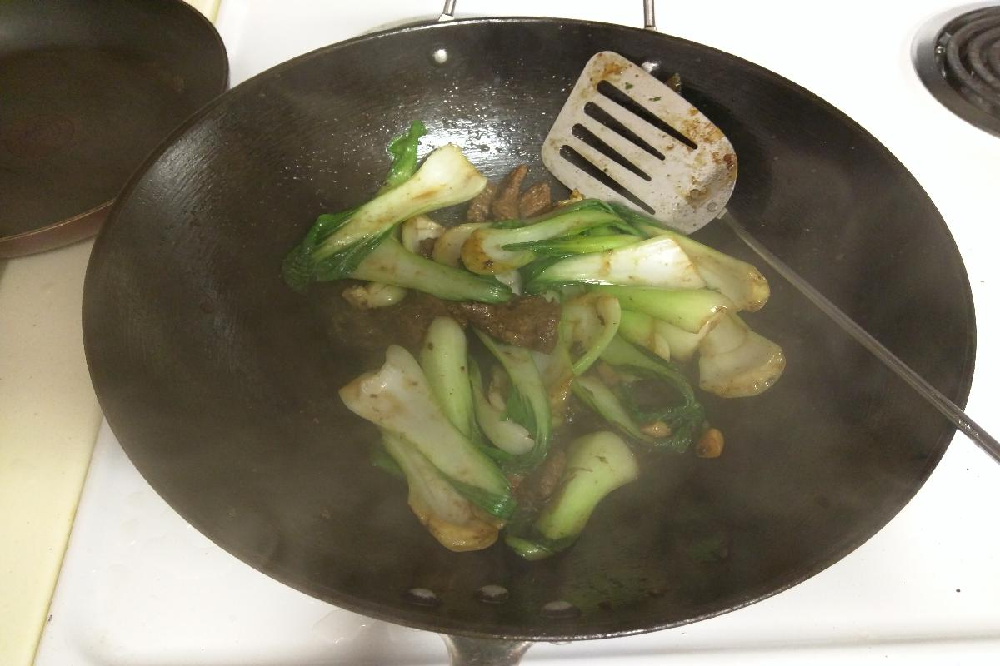
- 2016年10月6日，小白菜炒牛肉。
- 尝试了新的蔬菜。小白菜的确很适合炒，不会炒老，味道还不错。为什么老是炒牛肉？因为第一周大家买了许多牛排，但由于制作工艺上不纯熟，牛排做不好，于是都切成小片炒菜吃了。
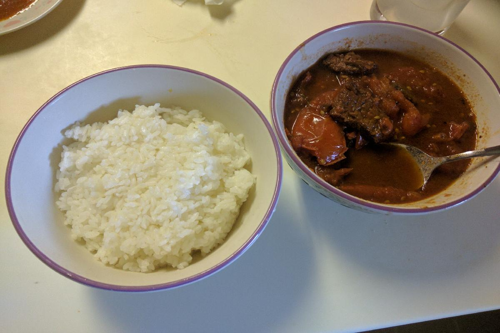
- 2016年10月9日，西红柿炖牛腩。
- 又一次尝试新蔬菜。牛腩是从Fresh买的一大块，切成小块。用了两个西红柿。先炒了葱姜热油，炒了一下牛肉，然后加入西红柿，加酱油煮，最后大火收汤。
- 感觉味道还不是很足，是否应该先炒肉有待商榷，下次应看一下攻略。
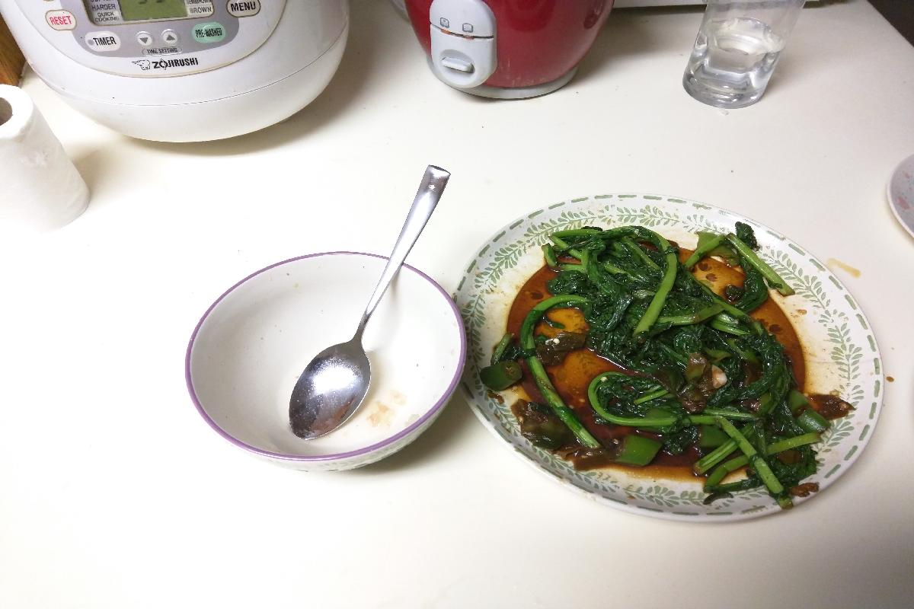
- 2016年10月9日，苦菜炒猪肉。
- 炒了一种不知名的蔬菜，才叶子红绿相间，很失败的一次尝试。如图，肉块都已经吃完了，但菜实在是太苦了，只好放弃。因为买到了猪肉，终于开始炒猪肉了。
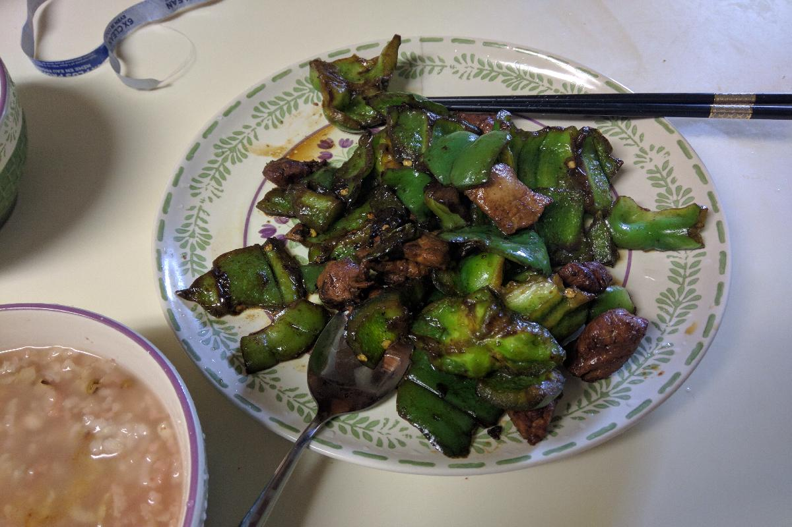
- 201610月10日， 青椒炒肉。
- 尝试新蔬菜。这次尝试还是十分成功的，青椒很适合炒菜，也不容易炒老，只是肉纯用的里脊肉，如果是五花肉的花估计会更香，不过暂时还没有发现哪里有卖。
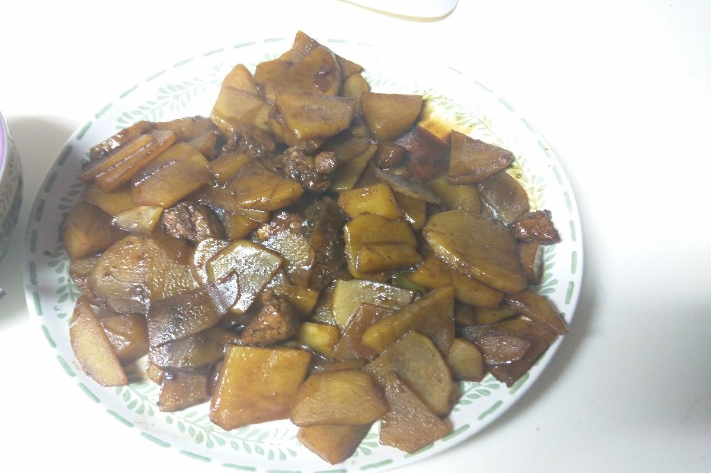
- 2016年10月10日，土豆片炒肉。
- 还可以的一次尝试，吃得时候正好和爸爸视频，得到了一些指点。两个土豆一个人吃还是太多了，以后可以不加酱油，只用盐来提味。还要记得买些辣椒备用。
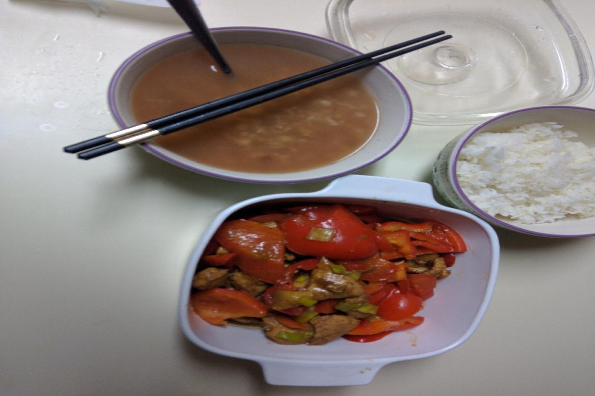
- 2016年10月16日，菜椒炒肉。
- 上回尝试了青椒炒肉，这回用的红色菜椒，味道依然不错，比较适合炒猪肉。
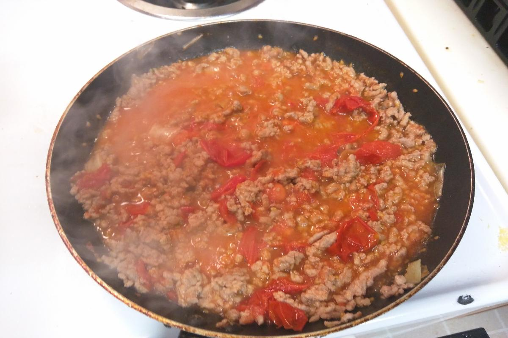
- 2016年10月19日，肉末番茄酱。
- 刚出锅的肉末番茄酱热气腾腾。这次有两个改进：1是使用了煎鸡蛋的小锅，肉末炒的更香一些。2是用的小西红柿，也就是俗称圣女果，也是巧合，之前买的圣女果一直没吃有些脱水了，于是一锅炒了。现在看来效果拔群。因为小红果水分很多，后面也不用加水，做出的番茄酱味道十足。
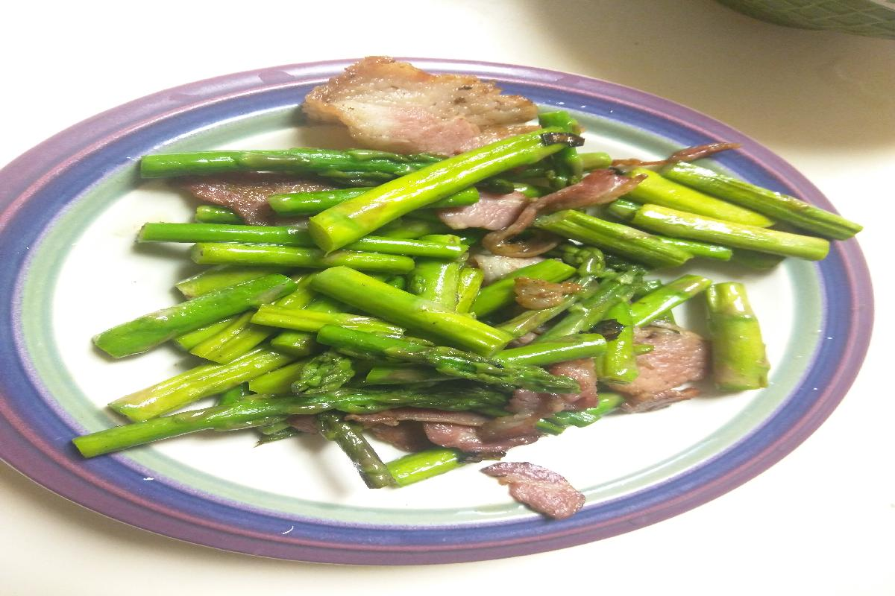
- 2016年10月21日，加强版芦笋炒肉。
- 这个版本的芦笋炒肉在参考攻略后主要有如下改进：
- 芦笋切成小段，用开水焯一下去除草酸。
- 炒好肉后放入芦笋简单拨一下即可出锅。效果很好！
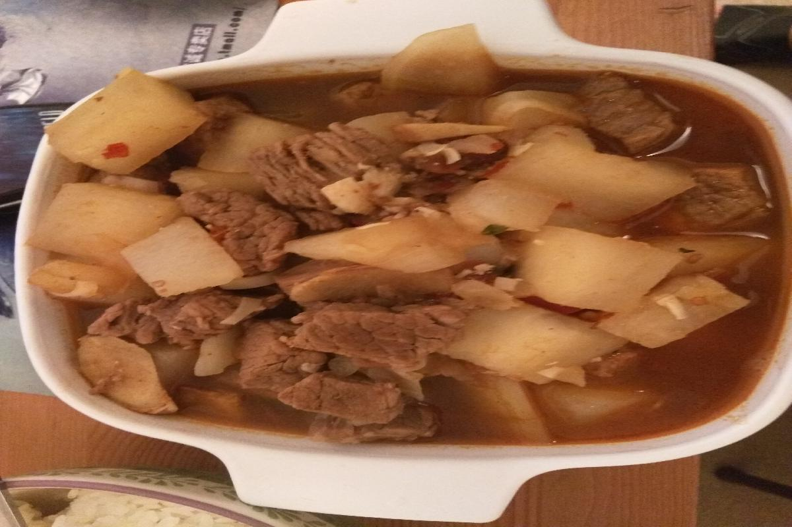
- 2016年10月30日，萝卜牛腩。
- 突发奇想特别想吃萝卜牛腩，于是动手操作，参照攻略第一次做，效果还不错。
- 主要步骤先煮牛腩出血水，然后加佐料炒，最后加水煮，半个小时后加入萝卜再煮15分钟。
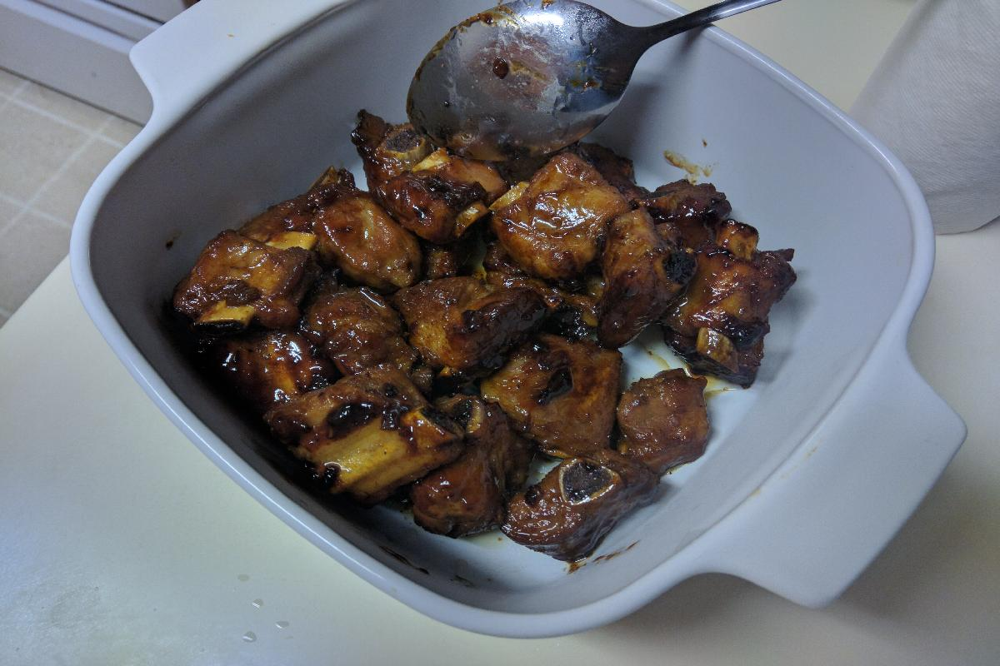
- 2016年11月01日，糖醋排骨。
- 根据攻略制作的糖醋排骨，先炒糖，再炒排骨，再加水煮，最后收汁。色相还不错。